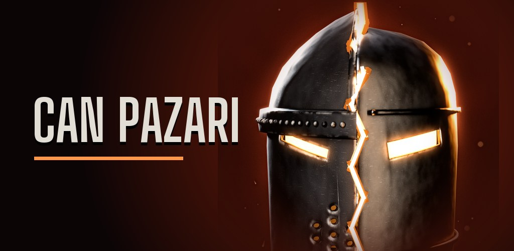

Can Pazarı
Soldiers from 2091. One mission in 1189: kill the Seed before it grows.
A dark fantasy, top-down action roguelike for iPhone with hard-hitting melee combat, loot you can see on your armour and online co-op for up to 4 players. Made by one independent developer in Türkiye.

Fact sheet
| Developer | Solo independent developer, Türkiye |
|---|---|
| Release | 18 November 2026 (App Store, 173 countries and regions) |
| Platform | iPhone |
| Price | Free. No ads. Optional cosmetic packs (colour schemes, supporter badge) arrive with update 1.0.1. Nothing that affects power is for sale. |
| Genre | Dark fantasy action roguelike / action RPG, top-down camera, room-by-room runs |
| Players | 1–4, online co-op with a room code, no account needed |
| Content | 3 acts, 120 weapons, 136 armour pieces, 4 pilots with mastery trees, multi-phase bosses |
| Languages | In game: English and Turkish. Store page: 24 languages. |
| Age rating | 13+ (frequent fantasy violence) |
| Engine | Godot (open source) |
| Privacy | No data collected, no tracking (App Store privacy label: Data Not Collected) |
| App Store | apps.apple.com/app/id6835660578 |
| Pronunciation | “jahn pah-zah-ruh” |
Description
Short (50 words)
Can Pazarı is a dark fantasy action roguelike for iPhone. Four soldiers in worn power armour are sent from 2091 to the year 1189 to destroy an alien Seed before it takes root. Fight room by room, alone or in online co-op for up to four players. Free, no ads.
Long
In 2091 an alien Seed is choking the world. The last shelter sends four pilots one way into the past, to the year it was first found, to destroy it before it takes root. The Seed saw them coming. It twists beasts and men into its guardians, and the kingdoms that worship it hunt the pilots as demons.
Can Pazarı plays as a top-down hack and slash: dash, parry, heavy blows and staggers, room after room. Every door shows its reward before you choose it. Every death sends you back to camp stronger. Loot is physical and risky: everything you equip is visible on your pilot, and if you die carrying it, half of your bag is gone unless you sent it home in time.
Co-op is built around one mechanic, the Core Link: give part of your own life to a falling ally and pull them back up. Up to four players join with a six-letter room code; there is no text or voice chat, only preset signals.
What makes it different
- The name. In Turkish, can pazarı is an idiom for a desperate scramble where everyone tries to save their own life. The game turns it around: in co-op you trade your own life to save someone else.
- Two ages in one fight. Power-armoured soldiers from 2091 in a medieval world of 1189, where the locals believe they are demons.
- 4-player online co-op on a phone, without accounts or data collection.
- Risky loot: bag, safe pocket and send-home. Die, and half of what you carry is gone.
- Fair business model: free, no ads, cosmetic-only purchases, never pay-to-win.
Trailer
Download trailer (MP4, 1280×720, 22 s, no audio). A 1080p master is available on request.
Screenshots
Click an image for the full 1920 px file. Free to use in coverage of the game.


Icon and logo

App icon, 1024×1024 PNG · Title banner, 1024×500 JPG

About the developer
Can Pazarı is designed, coded and shipped by one independent developer in Türkiye, using the open-source Godot engine. Music and some sound and art assets are licensed under Creative Commons; full credits are in the game's Credits screen.
Contact
Türkçe kısa tanıtım
Can Pazarı, Türkiye'den tek bir bağımsız geliştiricinin yaptığı, iPhone için karanlık fantastik bir aksiyon roguelike. 2091'den gönderilen güç zırhlı dört asker, uzaylı Tohum'u kök salmadan yok etmek için 1189'a iner. Tek başına ya da 4 kişiye kadar çevrimiçi co-op. Ücretsiz, reklamsız; satılan her şey yalnızca görünüş.
Basın görselleri yukarıdaki bağlantılardan serbestçe kullanılabilir. İletişim: destek sayfası (başlığa “Basın” yazın).